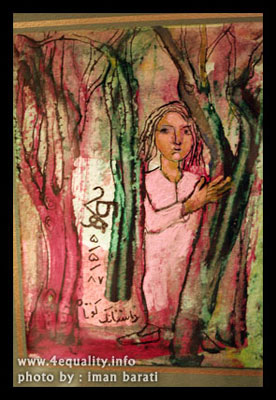
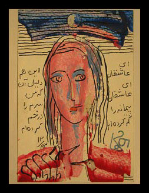
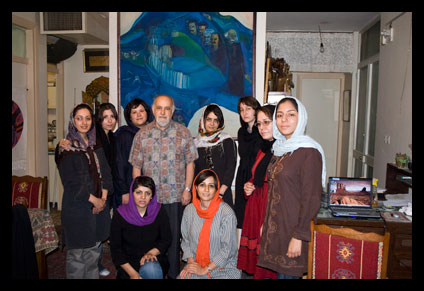

پذيرش > مقالات > خارج از چارچوب > حمایت هانيبال الخاص هنرمند برجسته ایرانی از برابری طلبی
 در آغاز سومین سال فعالیت کمپین یک میلیون امضا در آغاز سومین سال فعالیت کمپین یک میلیون امضا

 حمایت هانيبال الخاص هنرمند برجسته ایرانی از برابری طلبی حمایت هانيبال الخاص هنرمند برجسته ایرانی از برابری طلبی
5 شهریور 1387 - تارا نجد احمدی - نسخه قابل چاپ
"هانيبال الخاص"، نقاش سرشناس ایرانی، درآمد برخي از آثارش را به نفع زنان برابري طلب ايران زمين هديه كرد.
درمراسم افتتاحيه نمايشگاهي كه از 18 مرداد ماه آغاز شد و به مدت یک هفته ادامه داشت ودر كنار هنرمندان و علاقمندان به آثار الخاص، جمعي از اعضاي "كمپين يك ميليون امضا براي تغيير قوانين تبعيض آميز" نيز حضور داشتند.

الخاص در افتتاحیه این نمایشگاه ضمن ایراد سخنرانی کوتاهی درباره نحوه و چگونگی ارائه آثارش، با اعلام حمایت از فعالیت های برابری خواهانه زنان سرزمینش، بخشي از درآمد حاصل از فروش تابلوهای خود را به کمپین یک میلیون امضا هدیه کرد.
وي همچنين در سخنراني افتتاحیه این نمایشگاه گفت: یک هنرمند نمی تواند نسبت به محیط اطراف خود بی توجه باشد و در خلا و بدون رابطه با جامعه و مردم نقاشی کند. مسائل و مشکلات زنان به عنوان یک گروه حاشیه ای و درجه دو در فضای مردسالار ایران برای خود من که یک اقلیت مذهبی هستم، بسیار قابل درک و ملموس است. من سختی های اقلیت بودن را می دانم و از تلاش شما برای تغییر قوانین به سمت برابری حمایت می کنم و توان زنان سرزمینم را می ستایم، این حاشیه ای بودن به من کمک می کند که رنج آنها را هم بیشتر حس کنم و هم اينکه نسبت به آن بی تفاوت نباشم.
الخاص در ادامه بخشی از وقت سخنرانی خود را به فعالین زن حاضر در نمایشگاه اختصاص داد تا در این فرصت کوتاه درباره فعالیت ها و دغدغه هایشان در کمپین یک میلیون امضا صحبت کنند.
"حمیده نظامی" به عنوان عضو کمیته هنری کمپین یک میلیون امضا به توضیح و شرح فعالیت های کمپین درطول دو سال گذشته پرداخت و گفت: "جنبش زنان ايران كه مديون تلاشهاي بسياري از زنان ايراني از سده هاي گذشته است، در اين دو سال اخير تمام تلاش خود را براي رسيدن به خواسته هاي برابري طلب خود کرده است. در اين ميان چه بسيار موانعي كه پشت سرنگذاشته و چه موانعي كه در پيش رو دارد و آنچه موجب دلگرمي اين جنبش است حمايتهاي مردمي، در كنار پشتيباني بزرگان علم، فرهنگ و هنر است."

وی ضمن تشكر و قدرداني از اين حمايت، بر تاثیرگذاري پشتيباني افراد سرشناس وهنرمندان موثری چون استاد الخاص از فعالیت های برابری خواهانه زنان، تاكيد كرد و گفت: "هنگاميكه براي بازديد از آثار ایشان به نمايشگاه آمدیم، با روي گشاده از ما به عنوان بخش كوچكي از جنبش زنان استقبال كرد و با همراهي خود به ما نشان داد كه در اين ميان تنها نيستيم و هستند كساني كه با انديشه و هنر خود به پشتيباني از فعاليتهاي مدني برخيزند."
هانیبال الخاص متولد ۱۳۰۹ از پدر و مادری آشوری در کرمانشاه است. او که آغازگر طراحی فیگوراتیو در نقاشی نوگرای ایران است ، تاکنون بیش از ۱۰۰ نمایشگاه اختصاصی و بیش از ۲۰۰ نمایشگاه گروهی در ایران، اروپا، کانادا ، آمریکا و استرالیا داشته و بیش از 35 سال به تدریس نقاشی مشغول بوده است. وی تاکنون برای دهها کتاب تصويرروی جلد کشیده و شعر مصور کرده و خود نیز ۴ کتاب با هدف آموزش هنر تالیف کرده است.
علاوه بر این وی به زبان آشوری هزاران بیت، دوبیتی، هایکو، قصیده، منظومه و غزل سروده و ۱۵۰ غزل حافظ را به زبان آشوری، با حفظ وزن و قافیه و معنا و طنز، ترجمه کردهاست. از نیما یوشیج، ایرج میرزا، میرزاده عشقی و پروین اعتصامی نیز آثاری را به آشوری برگرداندهاست و این گرایش به ترکیب شعر و ادبیات با نقاشی در آثارش نیز کاملا مشهود است تا حدی که به شیوه خاص وی در طراحی مبدل شده است. وی معتقد است اثر باید داستان داشته باشد و نقاش تحت تاثیر ادبیات باشد و مجموعه نقاشی های وی ازشاعرانی چون فروغ فرخزاد، احمد شاملو و نیما یوشیج نیز تجربیات موفقی در همین مسیر است.
همچنين آثار هانیبال الخاص همواره به محیط اطراف خود حساس بوده و در ارتباط با افراد و واقعیت ها و داستان های تاریخی تصویرگری شده اند. او به عنوان یکی ازچهره های متفاوت هنر ایرانی همواره در تلاش برای ارتباط با محیط اطراف خود است ودر آثارش داستان های واقعی زندگی را بازنمایی می کند. وی با طنز ویژه و همیشگی خود سعی می کند سلیقه و فضای رایج درنمایشگاه های نقاشی معمول را تغییر داده وآن را فعال تر کند؛ برقراری هپنینگها، انتخاب محیط انبار برای نمایشگاه، نقاشیهای پر از هزلیات عبید زاکانی و مولوی، انجام نقاشی و طراحی در محیط خود گالری، استفاده از درو پنجره های قدیمی و تبدیل آن ها به بوم از جمله ابتکارات وی برای شکستن کلیشه های رایج درمحیط نمایشگاه و آفرینش هنری بودند.
مجموعه اثار به نمایش در آمده در این نمایشگاه شامل پنجاه تصویرسازی و نقاشی کوچک در مرز قصه و رویا بود. الخاص در این نمایشگاه در آمد حاصل ازفروش بخش دیگری از آثارش را به انجمنی از شاعران ایرانی هدیه کرد.

ارسال به
بالاترین
،
توییتر
،
فریندفید
،
فیسبوک
در همين بخش :
 8 مارس روزی که نمی توان از ما دریغ کرد 8 مارس روزی که نمی توان از ما دریغ کرد
با طلاق توافقی از حقارت و کتک و فحش رها شدم /گزارشی از دادگاه محلاتی: مریم مالک
تجمع مادران عزادار در رشت
تغییر ممکن است/ جلوه جواهری(26 روز پس از بازداشت کاوه مظفری)
گامهایی که با تزلزل نا آشنایند/ گرامی داشت چهلم ندا در رشت
ديگر بخش ها :
طرح یک میلیون امضا
|
مقالات
|
سایت نوشته ها
|
اخبار
|
گزارش كمپين
|
گفت و گو
|
علیه سکوت
|
كوچه به كوچه
|
نامه های شما
|
گزارش ویژه
|
گفتگو با اعضا
|
ویژه سالگرد کمپین
|
تصویر برابری
|
دل آرام علی
|
تریبون
|
مقالات
|
تاریخ شفاهی
|
خارج از چارچوب
|
کتابخانه
|
درباره کمپین
|
کمپین در شهرها
|
کمپین در بند
|
صدای تغییر
|
ویژه 22 خرداد
|
لایحه حمایت از خانواده
|
گالری
|
عشا مومنی
|
امیر یعقوبعلی
|
خدیجه مقدم
|
راحله عسگری زاده و نسیم خسروی
|
پروین اردلان،جلوه جواهری، مریم حسین خواه، ناهید کشاورز
|
زینب پیغمبرزاده
|
سعیده امین، سارا ایمانیان، محبوبه حسین زاده، ناهید کشاورز و همایون نامی
|
احترام شادفر
|
نسیم سرابندی زاده،فاطمه دهدشتی
|
وبلاگ مهمان
|
پرونده خرم آباد
|
دستگیری ها
|
مریم مالک
|
پرستو اللهیاری
|
مهرنوش اعتمادی
|
سمیه رشیدی
|
Other Languages
|
همراهان
|
«فراخوان کمپین ده روز با بهاره هدایت»
| English
|